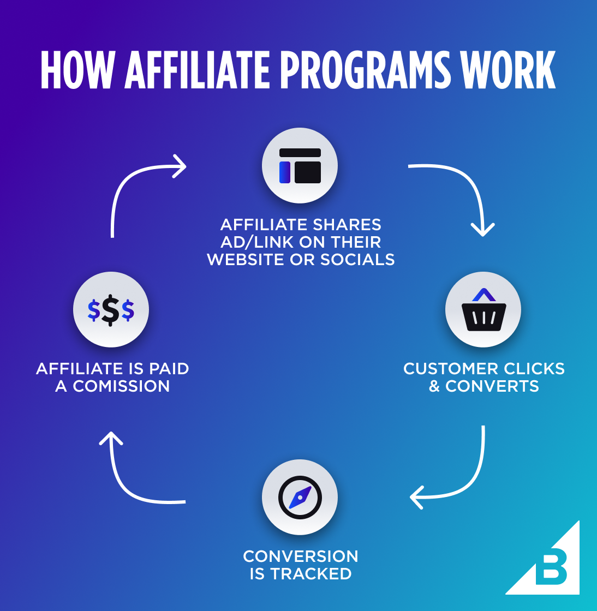
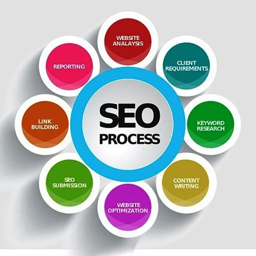
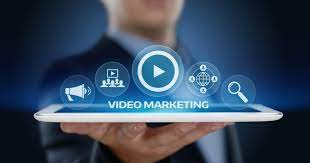

Affiliate marketing is a process where publishers earn a commission by using an affiliate link to promote a product or service made by another retailer or advertiser. The affiliate partner is rewarded a payout for providing a specific result to the retailer or advertiser. Affiliate marketing is promoting other people’s products in return for a small commission for each sale. You’ve probably seen headings marked “affiliate link” or “sponsored post” on many of the websites you visit; or maybe you’ve already taken the first step and signed up for an affiliate network.
If you are new to affiliate marketing, let’s cover how it works. First, you find an affiliate program or network that you are interested in. Look at the program overview, including the type of products or services, payment methods, and commissions they offer. If it appeals to you, sign up and wait for confirmation of your acceptance. Then, start creating content, adding the custom links the program provides. Those links track when one of your users makes a purchase, and you’ll earn a small commission. You can work with individual companies or affiliate networks, where you register and choose the programs that interest you. The programs are generally divided into categories to make selections easier. Once approved, start promoting your affiliate links on your website—in newsletters, on social media, and anywhere else you’re permitted to share links. The network sends you a payment when you’ve reached the minimum payment level. Payment methods vary and usually include PayPal, bank transfers, and checks.This party is sometimes also known as the publisher. Affiliates can also range from single individuals to entire companies. An affiliate promotes one or multiple affiliate products and tries to attract and convince potential customers of the value of the merchant’s product so that they end up buying it.
Search Engine Optimization (SEO) is a fundamental aspect of online success, driving organic traffic and enhancing online visibility. In today’s digital landscape, where competition is fierce, having a strong SEO strategy is crucial for small business owners, eCommerce store owners, website owners, bloggers, and webmasters alike. Why is SEO so important? Well, think about it. When was the last time you searched for something online and went beyond the first page of search results? Chances are, you didn’t. Studies show that the majority of users rely heavily on search engines to find information about other websites, products, and services. If your website doesn’t appear on those coveted top positions, you’re missing out on valuable opportunities to connect with your target audience.People browse the internet and search for things every day. According to GlobalWebIndex, 60% of the world’s population has access to the internet. And did you know that 53% of B2B and B2C website traffic comes from organic search? That means more than half of your website traffic could come from search engines like Google. So you need to optimize your website for search engines to get website traffic. This article aims to educate and empower individuals in the aforementioned roles by providing a comprehensive guide to the fundamentals of SEO. Whether you’re just starting out or looking to enhance your existing efforts, this guide will equip you with the knowledge and skills needed to make a positive impact.
The structure of the article will cover the key components of SEO, including on-page optimization, off-page optimization, and technical SEO. It will also delve into the skills necessary to excel in SEO, such as content creation and optimization, keyword research and analysis, link building and outreach, and analytics and reporting. By the end of this article, you will have a solid understanding of SEO’s importance, its impact on organic traffic and online visibility, and the skills necessary to develop an effective SEO strategy. SEO is not as complicated as it seems. Once you become familiar with the fundamentals of SEO, you’ll realize that SEO is about implementing best practices that give search engines and visitors the best chance of finding your website. Understanding what is SEO? In the vast realm of digital marketing, Search Engine Optimization (SEO) is the key to unlocking online success. So, what exactly is SEO? In simple terms, it refers to the process of optimizing your website and content to improve its visibility on search engine results pages (SERPs).
SEO is completely different from search engine (paid) advertising. With paid advertising, you’re paying search engines like Google to show your website on the search result page. Instead, with SEO, you’re optimizing your website for google search, so it organically shows up on the first page of the search result. The number of visitors who come to your website through these search results is defined as organic traffic (because they found your website themselves). Search engines like Google use complex algorithms to determine which websites appear at the top of the results. By understanding how these search engines work, you can harness the power of SEO to your advantage. Search engines crawl and index billions of webpages, analyzing various factors such as relevance, authority, and user experience to deliver the most relevant results to users’ queries. Now, why does SEO matter? Well, let’s consider this: when was the last time you clicked on a paid advertisement in the search results? Chances are, you gravitated towards the organic listings, the ones that appeared naturally based on their relevance and quality. SEO helps you secure those top organic positions, driving targeted traffic to your website and increasing your chances of attracting potential customers.
It’s important to differentiate between organic and paid search results. Organic results are the non-paid listings that appear based on their relevance to the search query, while paid results are the advertisements that appear at the top or side of the search results page. While paid advertising can be effective, SEO offers long-term sustainability and cost-effectiveness. Implementing SEO strategies brings a multitude of benefits. Firstly, it improves your website’s visibility, ensuring that your target audience can find you when they need you. Secondly, it increases organic traffic, meaning more potential customers are discovering your offerings. Additionally, SEO helps build credibility and authority in your industry, establishing trust with both search engines and users. In summary, SEO is the foundation of online success. By optimizing your website and content, understanding search engine workings, and differentiating between organic and paid search results, you can enjoy the numerous benefits that SEO brings to your digital presence. So, let’s dive into the core components and skills of SEO to help you get started on your journey to success.
Advertising model where advertisers pay a fee each time their ad is clicked by a user. It’s a way to buy visits to a website rather than earning them organically. Advertisers bid on specific keywords, and when users search for those keywords, the ads appear. PPC is commonly used in search engine advertising, like Google Ads, and can be an effective method for driving targeted traffic to websites. Pay-per-click advertising is a powerful online marketing tool that lets you reach potential customers by bidding on keywords related to your business. Essentially, you only pay when someone clicks on your ad — making it a cost-effective way to drive targeted traffic to a landing page. PPC ads work through an auction system, where advertisers bid on keywords relevant to their target audience. Your ad can appear in the search results when a user searches for a keyword you’ve bid on.
Your ad’s placement depends on your bid and your ad’s own quality score. Therefore, more competitive keywords will cost more per click.
Step 1: Choose a PPC platform First, choose a PPC platform like Google Ads, Microsoft Ads (formerly Bing Ads) or Facebook Ads. Keep in mind where your typical customers spend the most time. You’ll also need to choose a PPC ad network
Step 2: Select keywords and set a budget Next, you’ll want to choose the keywords to target. As for setting a budget, start small. Once you have a profitable ad, you can begin to scale.
Step 3: Write compelling copy for ads and landing pages Arguably, the most critical part of your PPC campaign is copywriting. Your copy sets your ads apart from the rest. It has the power to change an unprofitable campaign into a winning one.
Step 4: Bid on keywords Then, begin bidding on the keywords you selected. You can opt for manual or automated bidding. Manual bidding sets a maximum ad spend for bids. Automated selects bid to maximize results from your campaign.
Step 5: Adjust and optimize based on results
Your results will guide you. Depending on your analytics, you can adjust your positioning, ad copy, or landing page copy. Sometimes, certain ads won’t be profitable regardless of how often you change the copy or visuals.Social media marketing (also known as digital marketing and e-marketing) is the use of social media—the platforms on which users build social networks and share information—to build a company's brand, increase sales, and drive website traffic. In addition to providing companies with a way to engage with existing customers and reach new ones, SMM has purpose-built data analytics that allows marketers to track the success of their efforts and identify even more ways to engage.
Within 18 years, from 2004 (when MySpace became the first social media site to reach one million users) to 2022, the dramatic growth of interactive digital channels took social media to levels that challenge even the reach of television and radio. At the start of 2023, there were 4.76 billion social media users globally—over 59% of the world’s population.With over 80% of consumers reporting that social media—especially influencer content—significantly impacts buying decisions, marketers across industries are driving the evolution of social media marketing (SMM) from a stand-alone tool to a multipronged source of marketing intelligence on an increasingly important—and growing—audience.

KEY TAKEAWAYS
Social media marketing uses social media and social networks—like Facebook, X platform (formerly Twitter), and Instagram—to market products and services, engage with existing customers, and reach new ones.
The power of social media marketing comes from the unparalleled capacity of social media in three core marketing areas: connection, interaction, and customer data.
Social media marketing has transformed the way businesses are able to influence consumer behavior—from promoting content that drives engagement to extracting personal data that makes messaging resonate with users.
Because social media today is so ubiquitous, marketing techniques using these platforms are extremely important for businesses.
Email marketing is the act of sending a commercial message, typically to a group of people, using email. In its broadest sense, every email sent to a potential or current customer could be considered email marketing. It involves using email to send advertisements, request business, or solicit sales or donations. Email marketing strategies commonly seek to achieve one or more of three primary objectives, to building loyalty, trust, or brand awareness. The term usually refers to sending email messages with the purpose of enhancing a merchant's relationship with current or previous customers, encouraging customer loyalty and repeat business, acquiring new customers or convincing current customers to purchase something immediately, and sharing third-party ads.
•Transactional emails
Transactional emails are usually triggered based on a customer's action with a company. To be qualified as transactional or relationship messages, these communications' primary purpose must be "to facilitate, complete or confirm a commercial transaction that the recipient has previously agreed to enter into with the sender" along with a few other narrow definitions of transactional messaging.[3] Triggered transactional messages include dropped basket messages, password reset emails, purchase or order confirmation emails, order status emails, reorder emails, and email receipts.
•Direct emails
Direct email involves sending an email solely to communicate a promotional message (for example, a special offer or a product catalog). Companies usually collect a list of customer or prospect email addresses to send direct promotional messages to, or they rent a list of email addresses from service companies.
Content marketing attracts new customers by creating and sharing valuable free content. It helps companies create sustainable brand loyalty, provides valuable information to consumers, and creates a willingness to purchase products from the company in the future. Content marketing starts with identifying the customer's needs. After that the information can be presented in a variety of formats, including news, video, white papers, e-books, infographics, email newsletters, case studies, podcasts, how-to guides, question and answer articles, photos, blogs, etc.
Content marketing requires continuous delivery of large amounts of content, preferably within a content marketing strategy.
•Why is content marketing important?
Content marketing is a go-to tactic that’s proven to work. Also, it provides a competitive advantage. Take a look at what the data says about content marketing:
Businesses with blogs get 67% more leads than other companies.
67% of business to business (B2B) marketers say B2B content marketing increases engagement and the number of leads they generate.
88% of people credit branded videos for convincing them to purchase a product or service.
Content marketing benefits businesses in many ways. When done right, an effective content marketing strategy can:
Increase online visibility. A content strategy can help you attract more customers and website visitors, especially when people are constantly looking for solutions to their pain points. Offering educational and informative content about a topic they’re interested in can help you increase visibility online through your website or social media accounts.
Generate more leads. You can increase leads when content marketing is used to drive traffic. Since educating customers builds trust and helps them feel more comfortable purchasing from your business, you can generate more leads and start to develop relationships with potential shoppers.
Mobile marketing engages customers through their mobile devices, traditional marketing is any marketing that is not online. Traditional marketing can include newspaper, television, radio, and billboard ads. Typically, traditional marketing is one-way communication, whereas, with mobile marketing, customers can interact with your business through mobile advertisements.
Here are some examples of the main differences between mobile and traditional marketing:
Reach Audiences – traditional marketing reaches a more general audience; mobile marketing allows you to reach specific customer segments.
Engage Audiences – customers cannot directly respond to traditional marketing because it is a one-way message; customers can interact with mobile marketing content.
Time – when you stop running a traditional ad it is over, making it a good short-term strategy; mobile marketing exists forever online, making it a more long-term strategy.
Measurability – it is more difficult to measure the success of traditional marketing campaigns; mobile marketing campaigns are easier to measure because they target specific audiences.
Viral marketing is a business strategy that uses existing social networks to promote a product mainly on various social media platforms. Its name refers to how consumers spread information about a product with other people, much in the same way that a virus spreads from one person to another.[1] It can be delivered by word of mouth, or enhanced by the network effects of the Internet and mobile networks.
The concept is often misused or misunderstood,as people apply it to any successful enough story without taking into account the word "viral". Viral advertising is personal and, while coming from an identified sponsor, it does not mean businesses pay for its distribution.Most of the well-known viral ads circulating online are ads paid by a sponsor company, launched either on their own platform (company web page or social media profile) or on social media websites such as YouTube.Consumers receive the page link from a social media network or copy the entire ad from a website and pass it along through e-mail or posting it on a blog, web page or social media profile. Viral marketing may take the form of video clips, interactive Flash games, advergames, ebooks, brandable software, images, text messages, email messages, or web pages. The most commonly utilized transmission vehicles for viral messages include pass-along based, incentive based, trendy based, and undercover based. However, the creative nature of viral marketing enables an "endless amount of potential forms and vehicles the messages can utilize for transmission", including mobile devices.
The ultimate goal of marketers interested in creating successful viral marketing programs is to create viral messages that appeal to individuals with high social networking potential (SNP) and that have a high probability of being presented and spread by these individuals and their competitors in their communications with others in a short period.
Influencer marketing is a form of marketing that enables businesses to collaborate with individuals who have a following for increased brand exposure. Companies may ask a person with a large following to publish social media content that promotes their products or services. People often follow individuals they trust on social media, so if they see someone they follow advertising your business, there's an inherent trust factor you can lean on to boost your conversion rate.

An integral part of any influencer strategy is figuring out which influencers might suit your company. For example, if you sell facial moisturizers, you may want to work with an influencer with a strong track record of success promoting skincare products. In this scenario, it's best to partner with individuals that meet this criteria because those who follow that specific influencer are interested in what they have to say.
Once you find an influencer you like, reach out and see if you can strike a deal. For this transaction, you may allow them to receive a commission on all the products and services they sell. As an example, you might give them 10% of the revenue generated from the products and services they sell on your behalf. You'll need to review the numbers to see if this agreement is viable, and you might even want to partner with multiple influencers as a part of your influencer strategy.
The importance of video in marketing is widely acknowledged by marketers. Statista surveyed over 8,000 marketing leaders in June 2021 and found that pre-produced video was the leading digital consumer engagement tactic worldwide. Not only do 81% of respondents use pre-produced videos in their digital marketing, but another 13% said they are planning to use them. The next most-used tactic was livestream video, with 73% respondents currently using, and another 19% planning to do so.
 One of the main reasons that video marketing is so important is that video is a popular medium among audiences. Two-thirds of consumers say they would rather watch a video to learn about a product or service than read about it. In the first half of 2021, video was the largest single source of Internet traffic worldwide—53.7%—with social a distant second at 12.7%. Marketers need to share their messages where and how consumers will see them.Audio marketing helps brands extend campaign messaging beyond the screen. Audio marketing includes a broad spectrum of content, including jingles, scores, and branded content. It also includes audio ads. Audio advertising can be an important part of content marketing, and by integrating ads into audio experiences such as ad-supported music streaming or podcasts, advertisers can help customers discover products and services that are relevant to them.
There’s a growing amount of options for advertising within audio marketing. In addition to more traditional audio done through radio, streaming audio has grown 64% since 2014, according to the Q1 2021 edition of Edison Research’s Share of Ear study.1 This allows for digital marketing to reach customers where they are, on social media, apps, audiobooks, audio versions of blog posts, or podcasts. For example, eMarketer found that 60% of US adults ages to 18 to 34 are monthly podcast listeners.
There’s a variety of benefits to integrating audio advertising into a digital content strategy. With at least one smart speaker in 41% of US households, audio ads can help brands can meet audiences where they are when listening to ad-supported premium content throughout different points in their day.3 And by reaching audiences in different contexts, such as during screenless moments with tech or within interactive content, audio ads can help effectively engage audiences in new ways.
chatbot marketing encompasses a wide variety of use cases involving chatbots across the customer journey. Below is a chatbot marketing example scenario which illustrates some of the common use cases, like customer assistance, data collection, lead generation and personalized recommendations:

Imagine you work for an e-commerce company called "Acme Widgets," which sells a variety of widgets and accessories. Your goal is to use chatbots to enhance the marketing efforts of your business.
A potential customer named Sarah visits the Acme Widgets website looking for information about a specific widget she's interested in purchasing. As Sarah lands on the website, a chatbot named "WidgetGuide" pops up in the corner of the screen with a welcome message offering assistance.
WidgetGuide provides detailed information about the widget, including its specifications, pricing, and availability. But first, Sarah has some additional questions about the warranty and return policy, and WidgetGuide responds with helpful answers.
| PR | Reputation management | |
|---|---|---|
| goals | A PR team may work to secure media coverage for a product launch or arrange interviews with key executives to generate positive publicity. For example, a PR campaign might involve sending out press releases and organizing a media event to announce a new product, aiming to create awareness and generate excitement among the target audience. | In contrast, a reputation management team monitors and addresses online feedback and reviews. For instance, if a negative review surfaces about a company’s service on a popular review site, reputation management would work to respond to the review promptly, address the customer’s concerns, and take necessary steps to rectify the issue. |
| stratagies | Reputation management relies on search engine optimization (SEO), content creation, and online review management. For instance, a reputation management team may develop and optimize content to ensure positive search engine results for a brand or individual, making it easier for the target audience to find favourable information about them. | Reputation management relies on search engine optimization (SEO), content creation, and online review management. For instance, a reputation management team may develop and optimize content to ensure positive search engine results for a brand or individual, making it easier for the target audience to find favourable information about them. |
| focus | PR activities are outward-facing, aimed at building relationships with external stakeholders. They focus on shaping public perception, managing media relations, and creating a positive brand image. PR professionals actively engage with the media, attend industry events, and foster connections with influencers to amplify their clients’ messages. | Reputation management is inward-facing, concentrating on monitoring and managing an organization’s or individual’s online reputation (e.g., political reputation management). It involves monitoring online conversations, responding to customer feedback, addressing negative reviews, and handling online crises. Reputation management professionals work behind the scenes to ensure that any negative information is swiftly addressed and the online reputation remains positive. |
The evolution of marketing strategies has led to the incorporation of cutting-edge technology to captivate audiences with unprecedented experiences. Central to this technological revolution is the use of virtual reality (VR), which has emerged as an essential tool in engaging and delivering innovative content to consumers. VR's unique capability to create immersive environments makes it an ideal platform for marketers to distinguish their campaigns in a highly competitive environment.
Initially perceived as a medium primarily for gaming and entertainment, virtual reality has significantly expanded its horizons, showcasing its versatility across various sectors. As of 2024, it is anticipated that businesses will constitute a majority of the virtual reality user base, accounting for approximately two-thirds. Among these applications, marketing is rapidly becoming a prominent area of focus, leveraging the immersive nature of VR to create compelling brand experiences.
This article aims to explore the profound influence of VR in marketing, highlighting how businesses can integrate VR into their marketing strategies effectively. Additionally, it offers practical advice on selecting a VR app development company, ensuring that companies can harness the power of VR to elevate their marketing efforts. Through this exploration, readers will gain insights into the transformative role of VR in marketing, illustrated with real-world examples and actionable strategies.